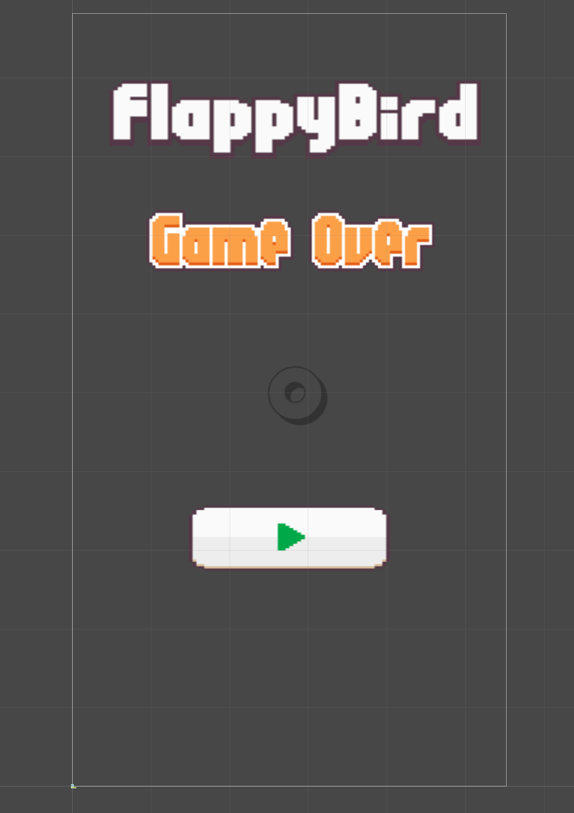
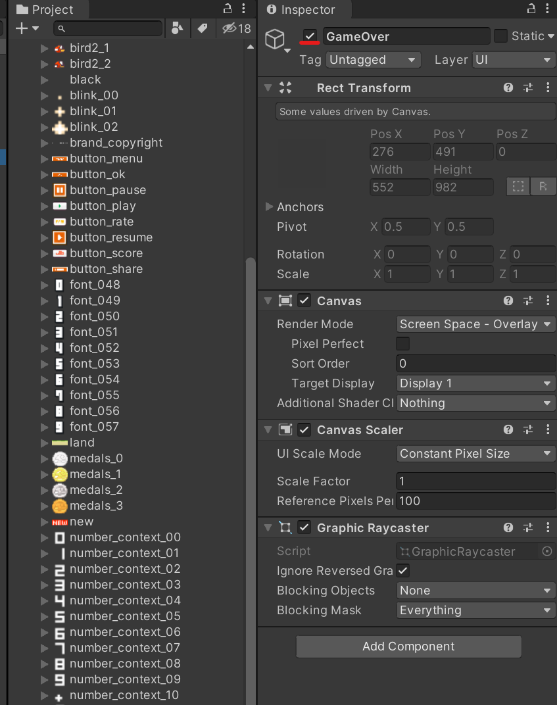
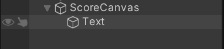
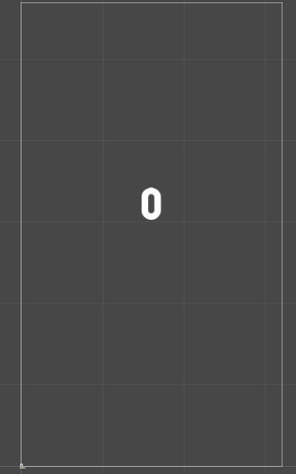
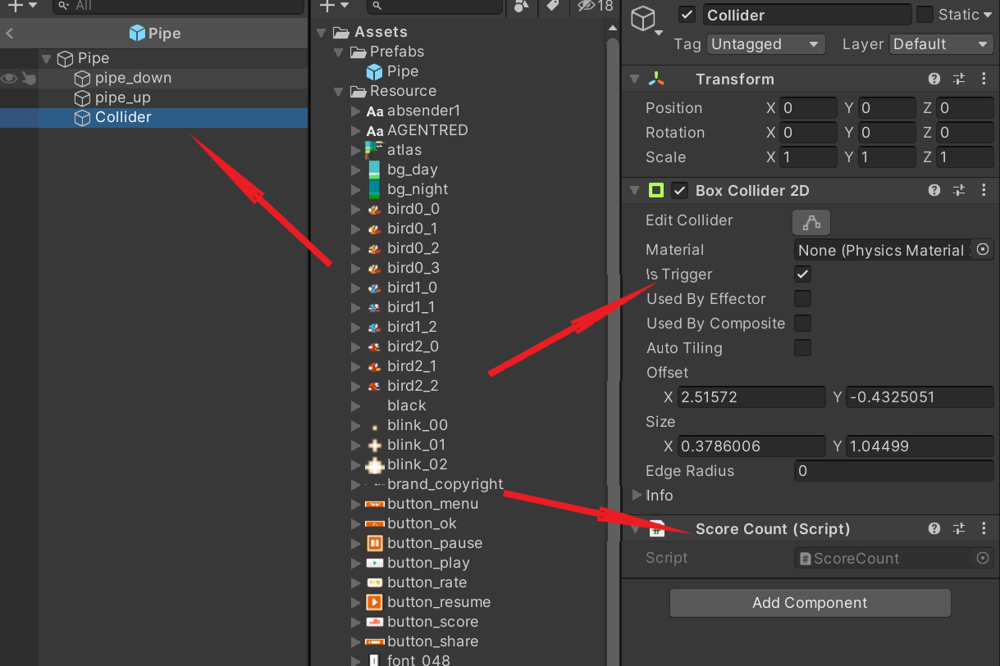

上一篇我们完成了管道的功能，这一篇我们则要来完善小鸟死亡和计分系统.
首先我们先制作一个GameOver的UI界面，在Hierarchy视窗新建一个Canvas(画布),重命名为GameOver，在里面新建3个Image，然后分别将title、text_game_over、button_play三个图像拖入这三个Image UI里的Source Image栏，调节大小。

之后再创建一个空物体，然后命名为GameManager，用于管理游戏内的各种按钮功能。新添加一个GameManager脚本，内容如下
1 | public class GameManager : MonoBehaviour |
然后在Fly这个脚本内新添以下内容
1 | public GameManager GM; |
之后在GameOver中选中开始键这个对象，添加一个Button，给他添加OnClickRePlay()
然后选中GameOver，将红线处的✔剔除，这样会在游戏中隐藏这个UI，在有需要的时候再让它显示就行了

这样就做好小鸟死亡和重玩的功能，接下来就是计分系统了
在Hierarchy视窗新建一个Canvas，命名为ScoreCanvas，在里面创建一个Text UI，用来展示分数，调整位置和字体大小后，大致结构如下


在ScoreCanvas上添加脚本，命名为Score，内容如下：
1 | public static int score; |
保存好后，将ScoreCanvas下的Text拖入Score Text这栏即可。
然后再Project视窗里找到Pipe预制件，点击Open Prefab后，新建一个空物体，命名为Collider，添加一个Box Collider 2D 组件，将碰撞体位置设置在两根管道中间，然后设置为Trigger

再添加一个脚本，脚本内容如下：
1 | public class ScoreCount : MonoBehaviour |
这样当小鸟穿过管道，分数就会增加一分，保存后回到初始场景，整个完整的Flappy Game就做完了！
实机演示：